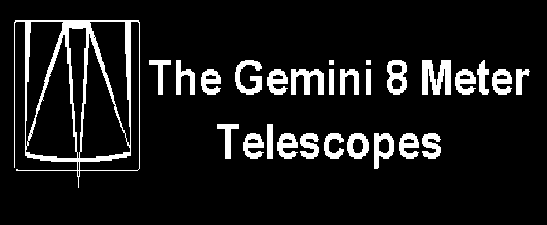

The main window of the DHS Console is displayed automatically when the console is started. The components of the main window include:
Commands, Options, Help, and Quit,which are described below.
Debug, Simulation, Reset Health, Reset, Initialize, Ping, Test, and Shutdown.
After the command has been chosen from the menu a dialogue window will appear (the dialogue windows are described in detail in the command descriptions). Most of the dialogue windows are "modal", which means none of the other windows can be manipulated. Usually the dialogue that is displayed confirms that the chosen command is the desired one. If the command is "confirmed" then the DHS Console sends the command to all of the subsystems for processing.
The commands shown on the "Commands" menu are also available from the toolbar shown in the overall status section of the main window.
Note more items may be added to this menu in the future.
state, health, debug level, simulation level, and log message.The status items can be viewed only; they can not be changed from the Console. The Status Server is responsible for reporting the status information for the DHS.
Debug, Simulation, Reset Health, Reset, Initialize, Ping, Test, and Shutdown.These commands can also be activated from the Commands Menu.
| Subsystem | Abbreviation | Responsibilities |
|---|---|---|
| Command Server | CMD | Controls the execution of commands. |
| Data Server | DTS | Controls the flow of data. |
| History Server | HIS | Records a history of events. |
| On-line Data Processing Server | OLP | Performs semi-automatic data reduction. |
| Quick Look Server | QLS | Handles the displaying of data quickly from the telescope, it is displayed before any data processing. |
| Synchronous Data Processing Server | SDP | Performs data reduction that occurs in a synchronous manner. |
| Status Server | STA | Controls the updating of all the status information. |
| Storage Server | STO | Creates transportable media for the Gemini archive and for Gemini users |
An overview of subsystem activity is shown on the mid portion of the Console's main window, below the text "Subsystem Overview". It consists of an LED, a subsystem identifier, and subsystem state information for each subsystem shown.
The LED on the left of the subsystem identifier indicates the health of the subsystem. The health is either GOOD, WARNING, BAD, or NOT KNOWN.
Beside the LED is a button with the subsystem identifier, it contains the one of the abbreviations listed above. When this button is invoked a window will appear on the display. This window gives more detailed subsystem status information and provides facilities for controlling the particular subsystem. Follow the subsystem links given above for more information on the subsystem windows.
Finally, to the right of the subsystem identifier is the textual state description. The state information indicates what mode of operation the current subsystem is in. The expected values are "RUNNING", "TESTING", "INITIALIZING", "STARTING", and "SHUTTING DOWN".
The resources that are monitored depend on the the values specified in the Status Server's configuration file, dhsStatus.config, and the Console configuration file, dhsConsole.config. Some of the typical resources that will be used include:
| Resource | Description |
|---|---|
| Data Server's permanent store | Contains files destined for archiving. Once the files are archived they are removed. |
| Data Server's temporary store | Stores the temporary files; files that have a lifetime set to temporary. These files are deleted upon shutdown and startup of the Data Server and can be deleted with a delete command from a client application. |
| History Server's working directory | The location of the log file, until it is archived. |
| Storage Server staging directories | The various directories where physical images are created on magnetic disk before being transferred to a media, such as CD, DVD, or tape. |
| /tmp | A general purpose system directory used to store any "temporary" files needed. |
| the DHS database | The database containing all of the tables used by any of the DHS subsystems. |
An overview of the resource usage is shown just below the subsystem overview section on the main window of the Console. This section is laid out in a manner similar to the subsystem section. For each resource being monitored there is an LED, a resource identifier, and a thermometer (bar which moves).
The LED, which is on the left, indicates the health of the resource being monitoring. The health can be good, warning, bad, or not known.
The resource identifier, which is in the middle, is a push button. When the button is invoked a window will appear. This window is the Resource Window, which contains detailed, textual resource information.
Finally, on the right appears the thermometer. A thermometer acts much like a thermometer used to measure tempurature. It has a blue bar which moves, in this case from left to right, and behaves like the mercury in a real thermometer. The position of the bar indicates how much of the resource is being used (as a percentage). The resource fully used when the bar is at its right most position and. it is not being used when the bar is at its left most position.